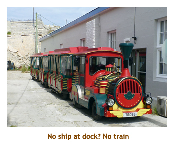
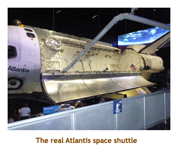

[ Home ] [ Travel ] [ Photography ] [ Pets ] [ Games] [ Rowing] [ Physics ]


Cruising on the Oceania Regatta
Travel
Cruises
Past Cruises (Diaries)
Future Cruises
Rogues Galleries
Land Trips
Diaries (Land Trips)
Hawai'i - Big Island - 04'01
Hawai'i - Maui - 05'02
Hawai'i - Big Island - 04'03
Hawai'i - Kaua'i - 09'04
Hawai'i - Big Island - 04'06
Hawai'i - Maui - 04'06
Mainland China - 05'07
Phoenix, Arizona - 12'07
Greek Isles - 05'08
Hawai'i - Kaua'i - 09'08
Hawai'i - Big Island - 09'09
Hawai'i - Maui - 05'12
Hawai'i - Big Island - 04'13
Ireland - 08'13
Mexico - Cancun 11'13
France/Belgium/Lux 07'15
Hawai'i - Big Island - 05'17
England / Wales - 06'17
Hawai'i - Big Island - 09'19
Photography
Cameras
Underwater
Pets
Tara
Blackie
Whitey
Muffy
Ollie
Rusty
Fluffy
Rufus&Dufus
Games
Rowing
Physics
Rating (out of 5):
Ship  Food
Service
Itinerary
Food
Service
Itinerary 
We booked this cruise fairly last minute because it came up on the travel agent el cheapo list. After we had booked, Oceania posted a fairly competitive retail rate so Dave & Joan booked the same cruise. The ship eventually filled up, with 658 passengers (684 max double occupancy).
Oceania was great as usual - good food and good service. I gave the itinerary only 4 stars as we missed Norfolk due to inclement weather. It certainly wasn't the fault of Oceania, but it was disappointing just the same. The entertainment relied heavily on the ship's song and dance crew with only 3 guest performers for the 12 day cruise. That was OK though as we really aren't entertainment people.
The highlight of the cruise for me was discovering Bermuda. The island is absolutely beautiful and the houses and other buildings were freshly painted in wonderful pastel colours. The ferry and bus system was excellent and we enjoyed the scenery as we travelled around the island. We enjoyed three full days there and still didn't see it all. The only negative of the island is the cool ocean and the lack of good snorkeling. Docking in Hamilton (middle of the island) was superconvenient as we were right in downtown Hamilton, with the Royal Dockyards one hour (by bus) to the west and St. Georges one hour (by bus) to the east.
Pre-cruise (Apr 10, 11) - Travel to Miami
Day 1 (Apr 12) - Boarding at Miami
Day 2 (Apr 13) - A vist to Nassau, Bahamas
Days 3 & 4 (Apr 14, 15) - Two days at sea, Bermuda
 Day 3 - We were up at 8:00, a bit late due to the lost hour. We had
breakfast in the buffet. It was a day at sea, so we read for a while, then Marjorie
went to a lecture and I to the gym. Lunch was taken in the buffet. We met at 1:00
in the card room with D&J, and played a round of Hand & Foot. Our first trivia
of the cruise was at 3:00. We formed a team that we played with each afternoon
session. Afterwards we wandered the ship. For dinner we ate at the buffet - lamb
chops, jumbo shrimp, sushi, etc. Afterwards we did evening trivia forming a
different team for our evening sessions. We did the entertainment which was a lady pianist
(Linda Gentille) - excellent.
Day 3 - We were up at 8:00, a bit late due to the lost hour. We had
breakfast in the buffet. It was a day at sea, so we read for a while, then Marjorie
went to a lecture and I to the gym. Lunch was taken in the buffet. We met at 1:00
in the card room with D&J, and played a round of Hand & Foot. Our first trivia
of the cruise was at 3:00. We formed a team that we played with each afternoon
session. Afterwards we wandered the ship. For dinner we ate at the buffet - lamb
chops, jumbo shrimp, sushi, etc. Afterwards we did evening trivia forming a
different team for our evening sessions. We did the entertainment which was a lady pianist
(Linda Gentille) - excellent.
Day 4 - Today we were up at 8:00 for a day very similar to the previous
one, at least through to the afternoon trivia at 3:00. We skipped the trivia to watch
the sail-in to Hamilton, Bermuda. It was a beautiful day and a very interesting sail
into the harbour. The only other cruise ship in town (actually the Royal Dockyards)
was the Oceania Riviera, one
of our favorite ships. The houses and other buildings were all freshly painted and so
clean - it reminded me of Tenerife in the Canary Islands. We were docked by
4:00 PM and went ashore to use the internet (at the public library). Fortunately we
checked our incoming email as there was an email from a snorkel company about
a tour we were to do tomorrow that we had booked online. There was a bad
weather warning, so they had canceled the snorkel.
For dinner I had osso buco. Always good! We did the
entertainment again, which was a so-so British comedian (Stevie Joe).
Day 5 (Apr 16) - Royal Dockyards, Bermuda

The Riviera had left the previous night, so there were no ships docked there.
We had the dockyards to ourselves! It was really enjoyable walking around checking out the
shops and the old buildings. Our first stop was at Island Center Tours to check on our refund for
our canceled snorkel. We stopped for lunch at a bakery where we ran into D&J who had
come over on the 11:00 ferry. We wandered a bit more and then caught the bus back to Hamilton
(1 hour). We popped into the ship for 3:00 trivia and then back into town to use the internet at the
library. We ran into Dave again as we were headed to a grocery store where we bought some
Boddington's beer. Back on the ship there was an announcement that there was a storm brewing
off the eastern US coast and we would not be able to make it to Norfolk, Virginia. In lieu we
were being given an extra day in Bermuda. I could handle that! For dinner I had rack of lamb.
The entertainment was a pirate party, but being pirate averse we went to bed instead.
Day 6 (Apr 17) - A day trip to St. Georges
 |
Day 7 (Apr 18) - A final day in Hamilton, Bermuda
Sailaway was at 4:00 as we were headed to Charlotte, North Carolina. It was very windy on the top deck. We were sailing into the tail end of the storm that had prevented us from leaving yesterday for Norfolk, Virginia. The captain announced that we would have a very bumpy night. For dinner I had beef short ribs. Very nice! We played evening trivia, but skipped the entertainment and instead walked around the ship trying not to bump into walls and other passengers. The rocky rolly stuff lasted until about 3:00 AM, when things settled down again. Not a good night!
Note: I should mention about a unique architectural feature of Bermuda. There is very
little fresh water on the island. Each house or building has a special roof to catch the rain water and
funnel it under the house into a cistern to be used for washing, bathing, watering, etc. Drinking water is
provided by a de-salination plant and imported bottled water. The roofs are stepped wood lathes
or stone with a finishing coat of plaster, and every roof on the island is painted white. The design of
the roof assists in catching the rain water. The effect of all white roofs is amazing - I have never seen
anything like it in all of our travels, except maybe Alberobello in Italy.
Days 8, 9 (Apr 19, 20) - Two days at sea
Day 9 - We were up at 8:00 as usual and headed to the buffet to eat. It was busy in the buffet
and Marjorie and I were hogging a table for 6 when the comedian (Stevie Joe) came and sat with us.
He was very interesting. It was still windy and cool. As usual Marjorie headed off to attend a port lecture
while I went to the gym. We had lunch at the buffet and then headed off to a 2:00 lecture by the comedian
about his earlier career with the British Police and Scotland Yard. It was really interesting. Afterwards, we
did afternoon trivia. For dinner I had shrimp and linguini. We skipped the entertainment and went to bed.
Day 10 (Apr 21) - First day in Charleston, SC
 We were up at 7:00 as we docked in Charleston. It was a beautiful day. We
had breakfast in the buffet. We had to go through US customs, this being our
first US stop after Bermuda. It was very quick and we were out on the dock
by 9:00 for our private tour. Rather than do the overly expensive tours offered
by the ship, Marjorie had booked us through the Web with Southern Accents
Tours. We were doing a tour today to Magnolia Plantation, followed by a city
tour. We were picked up promptly by a small van and driven to their HQ a few
blocks away. There we transferred to another van for our 1/2 hour trip to
the plantation. The plantation was huge. Originally being 2,000 acres, parts
of it were sold off, but 500 acres still remained. We wandered the grounds
stopping to see the beautiful gardens, the plantation home (mansion!), a petting
zoo, horses and stables, several slaves homes (not mansions!).
We were up at 7:00 as we docked in Charleston. It was a beautiful day. We
had breakfast in the buffet. We had to go through US customs, this being our
first US stop after Bermuda. It was very quick and we were out on the dock
by 9:00 for our private tour. Rather than do the overly expensive tours offered
by the ship, Marjorie had booked us through the Web with Southern Accents
Tours. We were doing a tour today to Magnolia Plantation, followed by a city
tour. We were picked up promptly by a small van and driven to their HQ a few
blocks away. There we transferred to another van for our 1/2 hour trip to
the plantation. The plantation was huge. Originally being 2,000 acres, parts
of it were sold off, but 500 acres still remained. We wandered the grounds
stopping to see the beautiful gardens, the plantation home (mansion!), a petting
zoo, horses and stables, several slaves homes (not mansions!).
Then we did a 45 minute tractor/wagon tour of the undeveloped areas
where we saw light forests and swamps, wading birds and several huge alligators.
The swamps were small lakes, covered with bright green duckweed. The fish
life was plentiful enough to feed the wading birds and the alligators. Special
"ramps" had been built in the lakes to allow the alligators to sun themselves
We had really enjoyed ourselves. The plantation is strictly tourist oriented
now, there are no longer crops of any kind grown here other than for show.
We found a nice picnic area to eat our muffins and Coke from the ship. We
wandered around the grounds and gardens some more, and then spent some time
in the gift shop. At 1:30 we were driven back to the tour HQ where we transfered
vans again to one that was doing the city tour. The tour involved driving
up and down most of the streets, pointing out all of the famous or interesting
buildings. We stopped at one point to walk along the sea wall in the Battery
area. We learned a lot about Charleston. We were dropped off at the ship by
4:00 PM. We caught the end of trivia and then shared a beer with D&J. For
dinner I had lamb chops. We did the final evening trivia session (tomorrow
was "collect your prize day"). We skipped the entertainment (comedian again)
and went to bed. No rocking and rolling tonight as we were overnighting in
Charleston.
Day 11 (Apr 22) - Second day in Charleston, SC

|
Day 12 (Apr 23) - Cape Canaveral and the KSC
The main area was a pot pouri of museum buildings, various rockets and an imax theatre. The space
shuttle Atlantis was shipped here after retirement, so some of the site was featuring the exploits of Atlantis.
The IMAX theatre was wonderful, featuring Atlantis and touching on some of the future space program
endeavers. In one of the plazas there were (mostly real) rockets from all of the programs (Mariner, Mercury, Gemini,
Appolo, Skylab, shuttle, etc). We also got to walk across a real gantry walkway (from the Apollo era), although it
was only a few feet above the ground rather than 310 feet high. We had a couple of hours to wander around
the buildings and exhibits and then it was time to return to the ship (5:30). The drive there and back was across
a totally flat wetland. No hills of mountains were visible in any direction. We saw lots of wetland animals,
including a number of egrets and a small alligator. We were back to the ship by 6:00. We decided to go to the
MDR for dinner as they were serving turkey. We went to the entertainment. It was a pianist (Peganini) who had excellent skills,
but a poor presentation. He tried being a Victor Borge, playing parts of pieces, purposely hitting wrong notes
and his English was not very understandable. By fluke he also repeated pieces that the lady pianist had played
a few evenings prior. Enough! Time to put our bags out and head to bed.
|  | |||
Day 13 (Apr 24) - Miami, then back home
 It was our final morning. We were up at 7:00 and had breakfast in the buffet. We bummed around our
cabin until 8:30 - the official boot-out time. We exited the ship, grabbed our luggage from the terminal building,
went through US customs and then met D&J waiting for the KSA shuttle. It came about 9:30 and
delivered us all to the airport. We said goodbye to D&J as they were renting a car and spending three more
days in Miami. It had been nice having them along for the cruise! We checked in to our flight, went through
security and then waited for our 12:30 flight to Toronto. We arrived on time in TO and cleared Canadian customs
and more security stuff. Our flight to Calgary was also on time and we got our suitcases from the baggage claim
It was about 9:00 by this time. We called Christina who was in the cell phone lot and she picked us up at the arrivals door.
We drove back to Christina's, said "Hi" to Matt, then climbed in our own car and drove home. It was about 10:00 PM
and the kitties had stayed up to welcome us home. Another great cruise!
It was our final morning. We were up at 7:00 and had breakfast in the buffet. We bummed around our
cabin until 8:30 - the official boot-out time. We exited the ship, grabbed our luggage from the terminal building,
went through US customs and then met D&J waiting for the KSA shuttle. It came about 9:30 and
delivered us all to the airport. We said goodbye to D&J as they were renting a car and spending three more
days in Miami. It had been nice having them along for the cruise! We checked in to our flight, went through
security and then waited for our 12:30 flight to Toronto. We arrived on time in TO and cleared Canadian customs
and more security stuff. Our flight to Calgary was also on time and we got our suitcases from the baggage claim
It was about 9:00 by this time. We called Christina who was in the cell phone lot and she picked us up at the arrivals door.
We drove back to Christina's, said "Hi" to Matt, then climbed in our own car and drove home. It was about 10:00 PM
and the kitties had stayed up to welcome us home. Another great cruise!